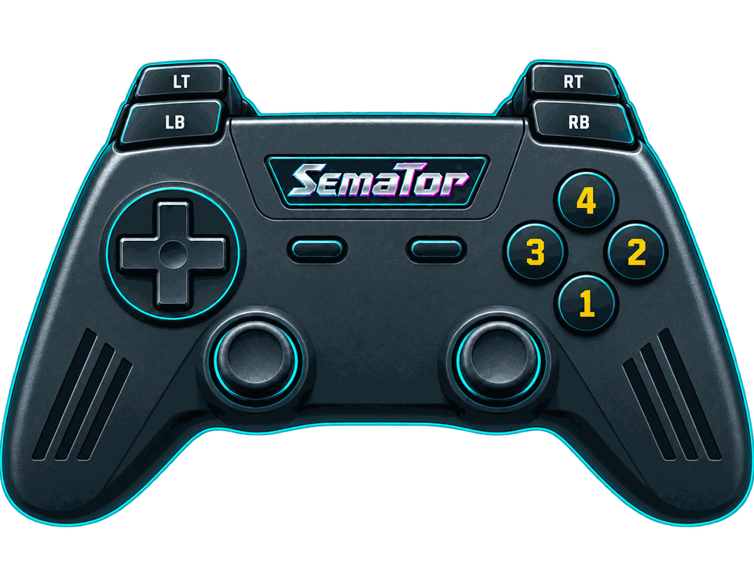

STEADY CURSOR
Keep the original cursor white instead of cycling colours; preserves its shape and mouse controls
Mouse-driven adventure. Stable uncropped picture keeps subtitles in place.
The host-drawn pointer moves independently of the game’s update rate. Widescreen scenery maps clicks into room space; verbs and inventory keep their original bounds. Auto-crop stays off for Zak without changing your global preference. Small rooms can retain borders.
Mouse moves the pointer; left click selects verbs, objects and inventory. Space pauses; Ctrl+F toggles sound; < / > change text speed. Auto-crop stays off for this game; global settings are preserved.

Select a button to see its action.
Hover or tap a control to see what it does in this game. Face buttons 1–4 are south, east, west and north - A, B, X and Y on most pads, whatever your pad prints on them.
| Control | Action |
|---|---|
| Move mouse pointer | |
| Move mouse pointer | |
| Select / left click | |
| Right click | |
| Escape key | |
| Pause (Space) | |
| Right click | |
| Select / left click | |
| Unassigned | |
| Unassigned | |
| Session menu (F11) | |
| SemaTor settings (F12) | |
| Unassigned axis / click | |
| Left stick click / Guide / extra buttons | Unassigned by default. Device or system Guide behaviour can vary. |
Mouse: move the pointer; left click selects; right click is available where the game uses it. Space pauses; Ctrl+F toggles sound; < / > change text speed. X sends Escape; Y sends Space.
These are release defaults, not your saved remaps. Open F11 → Controls for this game for live mappings, or F12 → Controls to change them. Start and Back remain reserved for SemaTor menus. Mouse speed is adjustable. One active host gamepad is supported; two-player modes do not imply two simultaneous gamepads.
These are the exact identities used by the enhanced profiles in SemaTor 1.1.320. A recognised profile is not a promise that every level, option or graphics device has been tested.
Existing exact enhanced-profile identities. These editions are recognised by the release; no new complete-game test was performed in 1.1.320. Options marked TEST retain their individual limitations.
A full disk-image checksum has not yet been recorded for these editions. Use the exact program/boot identities below; the filename alone is insufficient.
| Edition / program | Identity | Bytes |
|---|---|---|
| Zak McKracken and the Alien Mindbenders (1988, Lucasfilm) ZAK.PRG | raw program-text SHA-12dd79463643149952d95a599bb6926345e18e3d0 | 74434 |
Program SHA-1 covers the raw executable text before relocation, excluding its file header. Boot SHA-1 covers the decoded 512-byte boot sector. Neither is the checksum of the whole PRG, STX or ZIP. SemaTor’s library problem-report draft includes the executable SHA-1 and whether it is exactly recognised.
Download the edition/checksum list. If your edition is different, report its identity before assuming its enhanced profile is compatible.
Names match the release profiles, including experimental and practice options. Availability depends on the recognised disk edition. A matching filename alone does not verify an edition; untested releases may behave differently.
Keep the original cursor white instead of cycling colours; preserves its shape and mouse controls
Use the game's built-in fast mode for walking and scene waits; also speeds dialogue, but leaves the sound timer unchanged
Give the original noise voice its own channel so it cannot replace tone C; effects volume controls noise; no new music is added
Extend scenery and mouse interaction into the room wings; original verbs stay centred; small rooms retain borders
Wider scenery with room-coordinate clicks and a smooth host pointer; original camera and room bounds are preserved
Android and dual-screen controls remain in testing. Touch layouts can differ from desktop gamepad defaults. Mega lo Mania’s Thor panel and direct-touch input need device validation; this guide does not certify every touch layout.